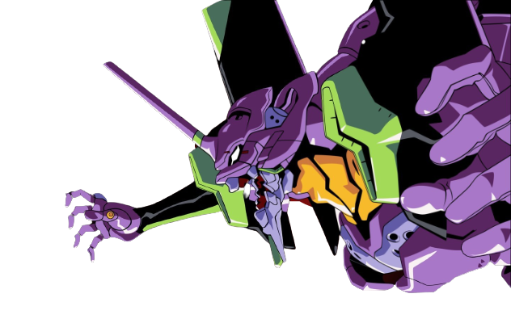

The Kshatriya was designed with the intention of miniaturizing the
NZ-000 Queen Mansa - which was more than 40 meters tall - while
retaining its performance. This was done through the implementation
of new technology, including the installation of Psycho-Frame around
its cockpit. Since Neo Zeon lost the ability to manufacture PsychoFrame
following the Second Neo Zeon War, the Kshatriya became a one-off unit.

Eva
Unit-01
Evangelion Unit-01 (エヴァンゲリオン初号機, Evangerion Shogōki?) is
the first non-prototype Evangelion unit, and is referred to as the
"EVA-01 TEST TYPE". It houses the soul of Shinji's mother, Yui Ikari.
It is mainly piloted by Shinji Ikari. Unit-01 serves as the flagship model for the series.
Kamen rider ICHIGO
Shin Kamen Rider (シン・仮面ライダー, Shin Kamen Raidā)
known internationally as Shin Masked Rider, is a Japanese superhero
tokusatsu film serving as a reboot of the 1971 TV series Kamen Rider as
well as to commemorate the franchise's 50th Anniversary. In the film,
Takeshi Hongo and his cohort Ruriko Midorikawa fight against an evil
terrorist organization that is responsible for his augmentation and stop
them from conquering society.